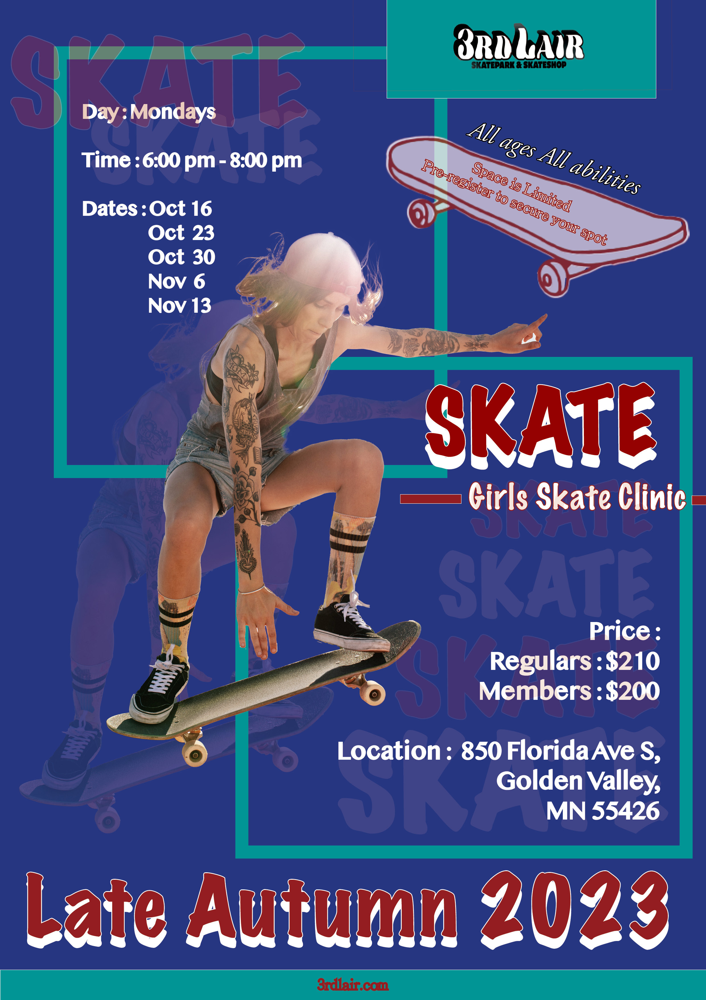

Poster 1

For poster 1, graphic design is my weakest part. I tried to look at some designs online to get some inspiration. In this design, I first wanted to ensure that I could incorporate the basic requirements of contrast, proximity, repetition and alignment. With more research, I understand these principles more. For example, in contrast, I placed similar information, such as dates and timings. The use of consistent design attributes but in different sections of the poster.
Poster 2

In crafting poster 2, I only limited myself to using yellow, black and white colours to strike a visual message. In the whole design, the use of colour tones, lines, and shades shows repetition. I tried to create a sense of movement and dynamism when positioning the central image and surrounding design elements for alignment. Proximity played an important role by grouping the details such as event dates and clinic information. I hoped I could do my poster better, after chatting with the professors that my poster design wasn't good, I changed some parts of it.
Poster 3
For poster 3, I used a colour-matching tool to harmonize colours and had a balanced combination of blue, dark red, and green. I made larger elements more prominent while scaling down less critical details. This could draw the attention of viewers to know the basic information. I looked at lots of designs but I didn't do well in them. I had room for improvement to enhance my design techniques.